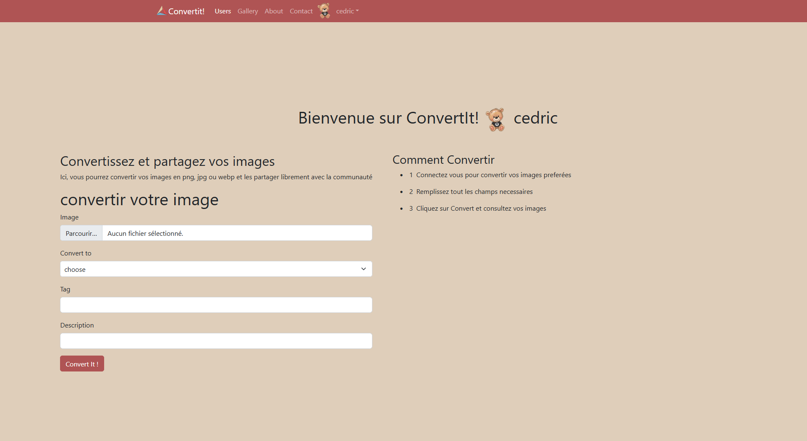
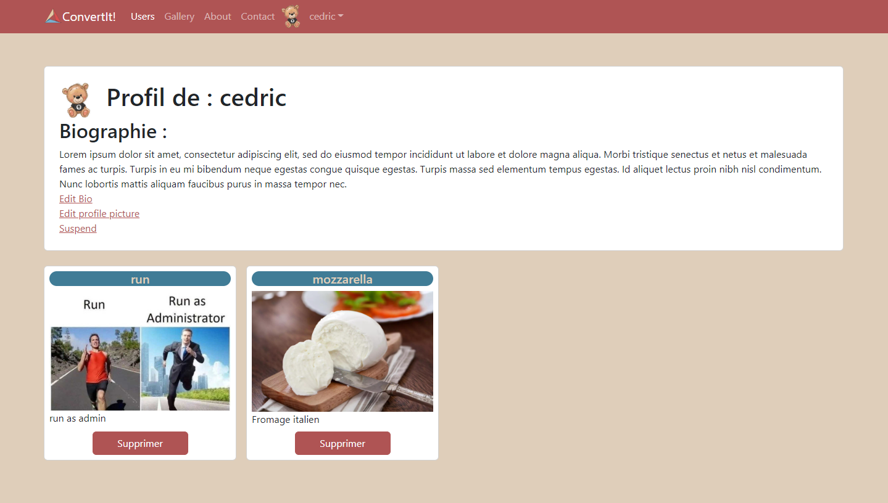
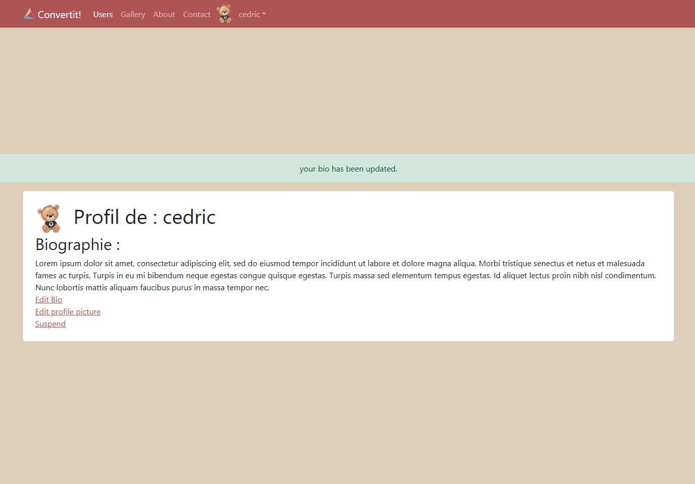
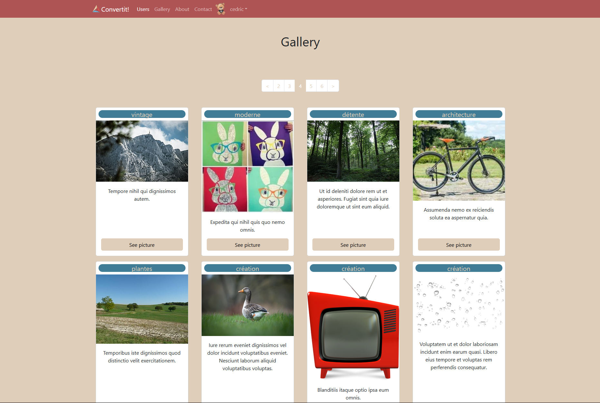
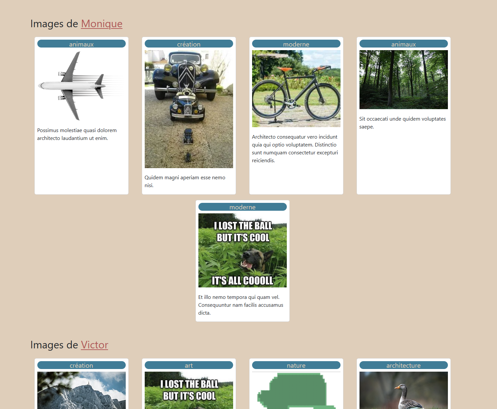

Contexte :
- Réaliser, en groupe, une application ustilisant le framework symfony.
- Utilisation de Git, Trello, Figma et des méthodes agiles.
- Le choix s'est porter sur une application communautaire de conversion d'images (png jpeg webp).
- La BDD est en mysql et la géstion se fera grace à Doctrine, le MVP est peuplé en utilisant fakerPHP et les fixtures.

Mission :
- L'utilisateur une fois connecté et authentifié peut utiliser l'outil de conversion.
- Il a la possibilité d'éditer sa bio et son avatar.
- Il peut suspendre son compte.
- Il peut voir les images qu'il a lui-même convertit et les supprimer si il le souhaite.
- Il peut consulter les images des autres utilisateurs.
- Il peut consulter les images d'un utilisateur spécifique.
- Il peut contacter l'équipe par mail.

Back end :
- Le routage se fait par les attributs dans les controlleurs.
- L'encodage du mot de passe se fait via un service et un EntityListener.
- Sécurisation des routes User par Role
- Utilisation des FormType.
- Envoi de mail avec Mailer.
- upload et conversion des fichiers en natif (sans bundle).

Front end :
- Utilistaion de twig et passage de paramètres.
- Utilisation de Webpack Encore.
- Utilisation de bootstrap pour la mise en page.
- Utilisation de messages flash.
- Pagination en natif (sans utiliser le bundle knpPaginator).
- Géstion des assets et des paths avec Webpack Encore.

Aller plus loin :
En créant un dashboard administrateur.
En créant une barre de recherche dans la gallery et dans la pages Users.
En donnant la possibilité de "retravailler" l'image avant conversion (crop, resize, filters ...) ...
